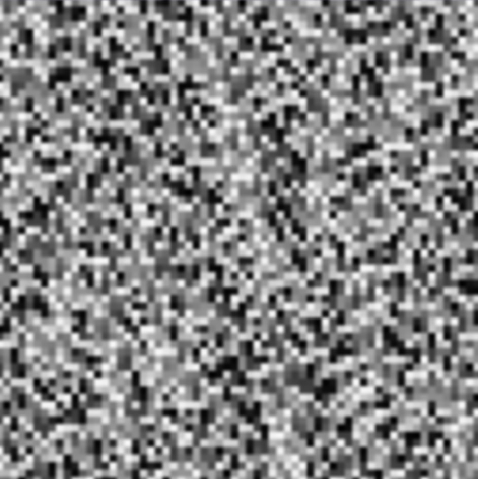

3D Graphics
The Value Noise project was a part of Computer Graphics course. The Goals of this project are:
Implementing a Value Noise algorithm in C++ to generate procedural textures and integrate this into the provided graphics framework and use OpenGL shaders to visualize the results
I had a hard time solving the issue where the noise appeared as a solid color. At first, I thought the
problem was with the Evaluate function and that the output was being blended incorrectly. However, it turned
out to be an issue with the layout(location) specification.
The layout(location) in the shader must exactly match the location used on the CPU side with
glEnableVertexAttribArray(location) and glVertexAttribPointer(location, ...). If these locations don’t
match, the shader receives incorrect data, causing unexpected results like a solid color instead of noise.
I’ve encountered similar issues before in 2D graphics, where textures wouldn’t show because of incorrect
layout locations. In that case, removing explicit locations helped, but this time, just leaving in and out
without proper locations was not enough.
This experience reinforced how important it is to clearly understand and correctly manage the
layout(location) bindings between CPU and GPU for correct rendering.